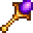

Return Scepter
(Redirected from Return sceptre)
Jump to navigation
Jump to search
| Return Scepter | |
 |
|
| The golden handle quivers with raw potential. Hold this scepter to the sky and return home at will. | |
| Information | |
| Source | |
| Sell Price | Cannot be sold |
The Return Scepter is a non-consumable Warp Totem. It warps the Player directly outside of their Farmhouse.
It is purchasable from Krobus in the Sewers for  2,000,000g, making it the most expensive inventory item in the game and second most expensive item, only behind the Gold Clock. It functions similarly to the Warp Totem: Farm, but is not consumed when used and teleports the player to the Farmhouse door instead of the totem warp point. The Return Scepter also skips the warp totem animation.
2,000,000g, making it the most expensive inventory item in the game and second most expensive item, only behind the Gold Clock. It functions similarly to the Warp Totem: Farm, but is not consumed when used and teleports the player to the Farmhouse door instead of the totem warp point. The Return Scepter also skips the warp totem animation.
Destination
The player will be teleported to the door outside the Farmhouse, or to their own Cabin.

History
- 1.1: Introduced.
- 1.4: Fixed bug causing the game to freeze when using the Return Scepter while wearing a bathing suit inside the Spa.
- 1.5: Farmhands using the Return Scepter are now returned to their own cabins instead of outside the host's farmhouse.